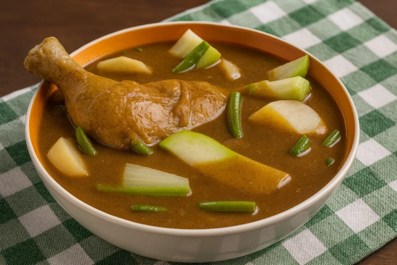
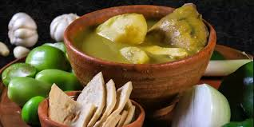
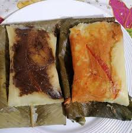
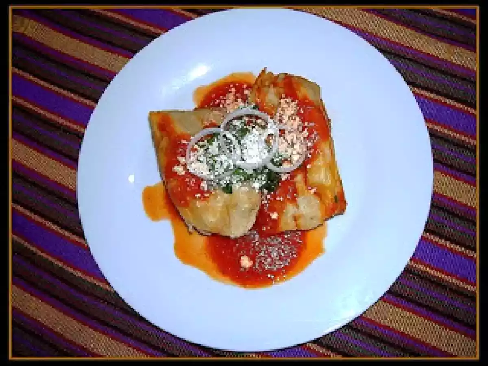
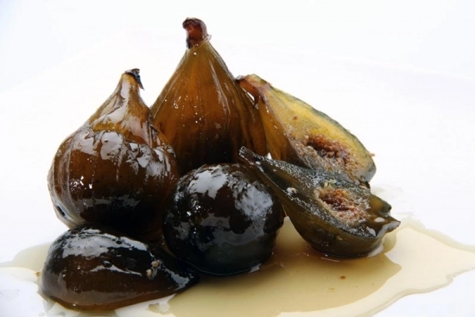
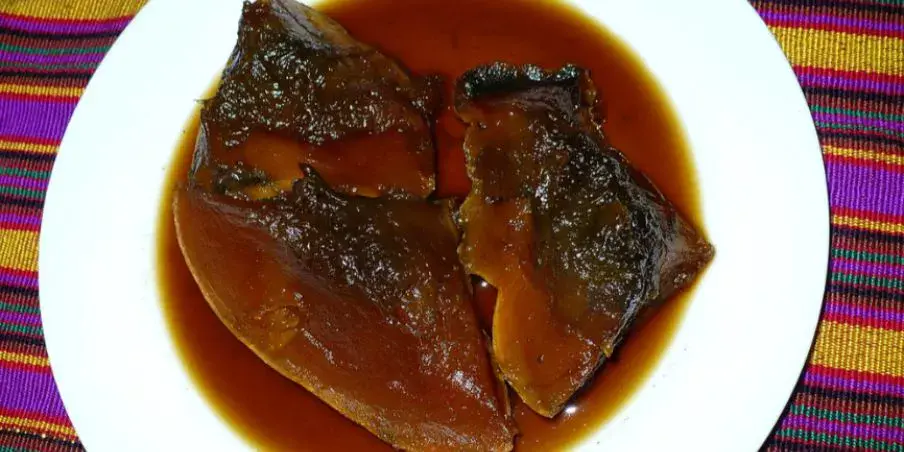

Pepián
El pepián es uno de los platillos más tradicionales de Guatemala. Se prepara con carne, verduras y un recado espeso elaborado con tomate, chile y semillas tostadas. Es muy conocido por su sabor fuerte y tradicional.

Jocón
El jocón es un platillo preparado con pollo y una salsa verde hecha con cilantro, tomate verde y otras hierbas. Generalmente se acompaña con arroz y tortillas.

Kak'ik
El kak'ik es una sopa tradicional hecha con pavo o chompipe y diferentes especias naturales. Su color rojo y su sabor especial lo convierten en una comida muy reconocida en Guatemala.

Tamales Colorados y Negros
Los tamales son preparados con masa de maíz y se envuelven en hojas de maxán. Los colorados llevan recado rojo y carne, mientras que los negros incluyen ingredientes dulces como chocolate y pasas.

Chuchitos
Los chuchitos son similares a los tamales, pero más pequeños y con una masa más firme. Generalmente llevan salsa y carne en el centro.
Dulces Tradicionales

Dulce de Coco
Es un dulce elaborado con coco rallado, azúcar y leche. Tiene un sabor dulce y una textura suave.

Canillitas de Leche
Son dulces típicos hechos con leche y azúcar. Se caracterizan por su textura suave y color claro.

Higos en Miel
Los higos en miel son preparados cocinando higos en una mezcla dulce de panela o azúcar. Son muy tradicionales en Guatemala.

Ayote en Dulce
El ayote en dulce se prepara cocinando ayote con panela y canela. Es un postre típico muy consumido durante festividades.